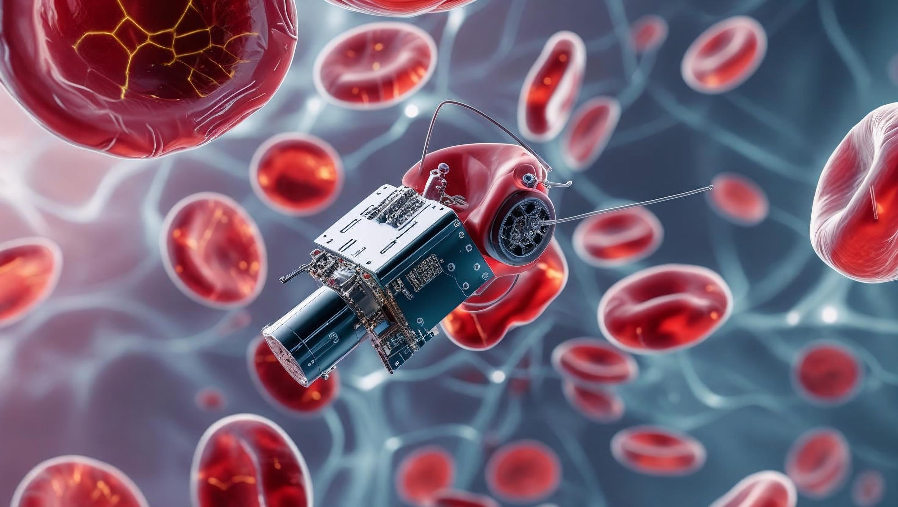

Nanotecnologia Avança e Abre Caminho para Tratamentos Médicos Personalizados
Por Giovanni Oliveira, TecScope
Pesquisadores do Instituto Internacional de Nanociência (IIN) anunciaram nesta semana um avanço inédito na aplicação de nanotecnologia para tratamentos médicos personalizados, utilizando nanorrobôs programáveis capazes de identificar e destruir células tumorais diretamente no organismo humano — com precisão inédita e sem afetar tecidos saudáveis.

Segundo o coordenador da pesquisa, Dr. Mauro Guedes, os novos nanodispositivos são compostos por materiais biocompatíveis e são inseridos na corrente sanguínea por injeção. Uma vez no organismo, eles reconhecem marcadores genéticos e bioquímicos específicos de células doentes, como as cancerígenas, e liberam medicamentos de forma localizada.
"É uma abordagem milimétrica e inteligente. Estamos falando de uma revolução na quimioterapia — agora, muito mais segura, precisa e com menos efeitos colaterais", explicou Guedes.
Os testes em humanos devem começar ainda este ano, com aprovação preliminar da Agência Mundial de Saúde. Os estudos anteriores, feitos em primatas, mostraram uma taxa de eficácia acima de 94% no combate a tumores de pâncreas, um dos tipos mais difíceis de tratar.